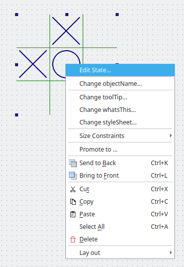

QDesignerTaskMenuExtension Class
The QDesignerTaskMenuExtension class allows you to add custom menu entries to Qt Designer's task menu. More...
| Header: | #include <QDesignerTaskMenuExtension> |
| CMake: | find_package(Qt6 REQUIRED COMPONENTS Designer) target_link_libraries(mytarget PRIVATE Qt6::Designer) |
| qmake: | QT += designer |
Public Functions
| virtual | ~QDesignerTaskMenuExtension() |
| virtual QAction * | preferredEditAction() const |
| virtual QList<QAction *> | taskActions() const = 0 |
Detailed Description
QDesignerTaskMenuExtension provides an interface for creating custom task menu extensions. It is typically used to create task menu entries that are specific to a plugin in Qt Designer.
Qt Designer uses the QDesignerTaskMenuExtension to feed its task menu. Whenever a task menu is requested, Qt Designer will query for the selected widget's task menu extension.

A task menu extension is a collection of QActions. The actions appear as entries in the task menu when the plugin with the specified extension is selected. The image above shows the custom Edit State... action which appears in addition to Qt Designer's default task menu entries: Cut, Copy, Paste etc.
To create a custom task menu extension, your extension class must inherit from both QObject and QDesignerTaskMenuExtension. For example:
class MyTaskMenuExtension : public QObject, public QDesignerTaskMenuExtension { Q_OBJECT Q_INTERFACES(QDesignerTaskMenuExtension) public: MyTaskMenuExtension(MyCustomWidget *widget, QObject *parent); QAction *preferredEditAction() const; QList<QAction *> taskActions() const; private slots: void mySlot(); private: MyCustomWidget *widget; QAction *myAction; };
Since we are implementing an interface, we must ensure that it is made known to the meta-object system using the Q_INTERFACES() macro. This enables Qt Designer to use the qobject_cast() function to query for supported interfaces using nothing but a QObject pointer.
You must reimplement the taskActions() function to return a list of actions that will be included in Qt Designer task menu. Optionally, you can reimplement the preferredEditAction() function to set the action that is invoked when selecting your plugin and pressing F2. The preferred edit action must be one of the actions returned by taskActions() and, if it's not defined, pressing the F2 key will simply be ignored.
In Qt Designer, extensions are not created until they are required. A task menu extension, for example, is created when you click the right mouse button over a widget in Qt Designer's workspace. For that reason you must also construct an extension factory, using either QExtensionFactory or a subclass, and register it using Qt Designer's extension manager.
When a task menu extension is required, Qt Designer's extension manager will run through all its registered factories calling QExtensionFactory::createExtension() for each until it finds one that is able to create a task menu extension for the selected widget. This factory will then make an instance of the extension.
There are four available types of extensions in Qt Designer: QDesignerContainerExtension, QDesignerMemberSheetExtension, QDesignerPropertySheetExtension, and QDesignerTaskMenuExtension. Qt Designer's behavior is the same whether the requested extension is associated with a container, a member sheet, a property sheet or a task menu.
The QExtensionFactory class provides a standard extension factory, and can also be used as an interface for custom extension factories. You can either create a new QExtensionFactory and reimplement the QExtensionFactory::createExtension() function. For example:
QObject *ANewExtensionFactory::createExtension(QObject *object, const QString &iid, QObject *parent) const { if (iid != Q_TYPEID(QDesignerTaskMenuExtension)) return 0; if (MyCustomWidget *widget = qobject_cast<MyCustomWidget*>(object)) return new MyTaskMenuExtension(widget, parent); return 0; }
Or you can use an existing factory, expanding the QExtensionFactory::createExtension() function to make the factory able to create a task menu extension as well. For example:
QObject *AGeneralExtensionFactory::createExtension(QObject *object, const QString &iid, QObject *parent) const { MyCustomWidget *widget = qobject_cast<MyCustomWidget*>(object); if (widget && (iid == Q_TYPEID(QDesignerContainerExtension))) { return new MyContainerExtension(widget, parent); } else if (widget && (iid == Q_TYPEID(QDesignerTaskMenuExtension))) { return new MyTaskMenuExtension(widget, parent); } else { return 0; } }
For a complete example using the QDesignerTaskMenuExtension class, see the Task Menu Extension example. The example shows how to create a custom widget plugin for Qt Designer, and how to use the QDesignerTaskMenuExtension class to add custom items to Qt Designer's task menu.
See also QExtensionFactory, QExtensionManager, and Creating Custom Widget Extensions.
Member Function Documentation
[virtual noexcept] QDesignerTaskMenuExtension::~QDesignerTaskMenuExtension()
Destroys the task menu extension.
[virtual] QAction *QDesignerTaskMenuExtension::preferredEditAction() const
Returns the action that is invoked when selecting a plugin with the specified extension and pressing F2.
The action must be one of the actions returned by taskActions().
[pure virtual] QList<QAction *> QDesignerTaskMenuExtension::taskActions() const
Returns the task menu extension as a list of actions which will be included in Qt Designer's task menu when a plugin with the specified extension is selected.
The function must be reimplemented to add actions to the list.